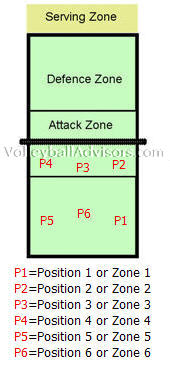
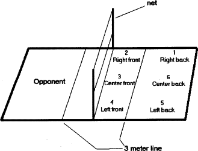

כללי:
כדורעף הוא משחק ,אם אינך מכיר בכלל את משחק הכדורעף מומלץ לפני קריאת חומר זה לראות קטע ממשחק הכדורעף בשביל להבין על מה מדובר. סרטון זה מציג משחק בין נבחרת ארצות הברית - אחת מהטובות בעולם לבין קובה.שדה המשחק:
גודלו של מגרש הכדורעף באולמות הוא 9 מטרים רוחב ו-18 מטרים אורכו באמצע המגרש יש קו רוחבי המפריד את 2 החלקות של 2 הקבוצות. לכל קבוצה יש קו הנקרא "קו השלוש" או "קו ההתקפה" והוא נמצא 3 מטרים מקו האמצע. במגרש יש 6 עמדות, והעמדות ממוספרות מ-1 עד 6. החל מהעמדה הימנית בקו האחורי נגד כיוון השעון. כלומר, עמדות מספר 4, 3 ו-2 הן בקו הקדמי ועמדות מספר 5, 6 ו-1 הן בקו האחורי.

